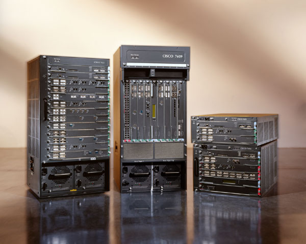
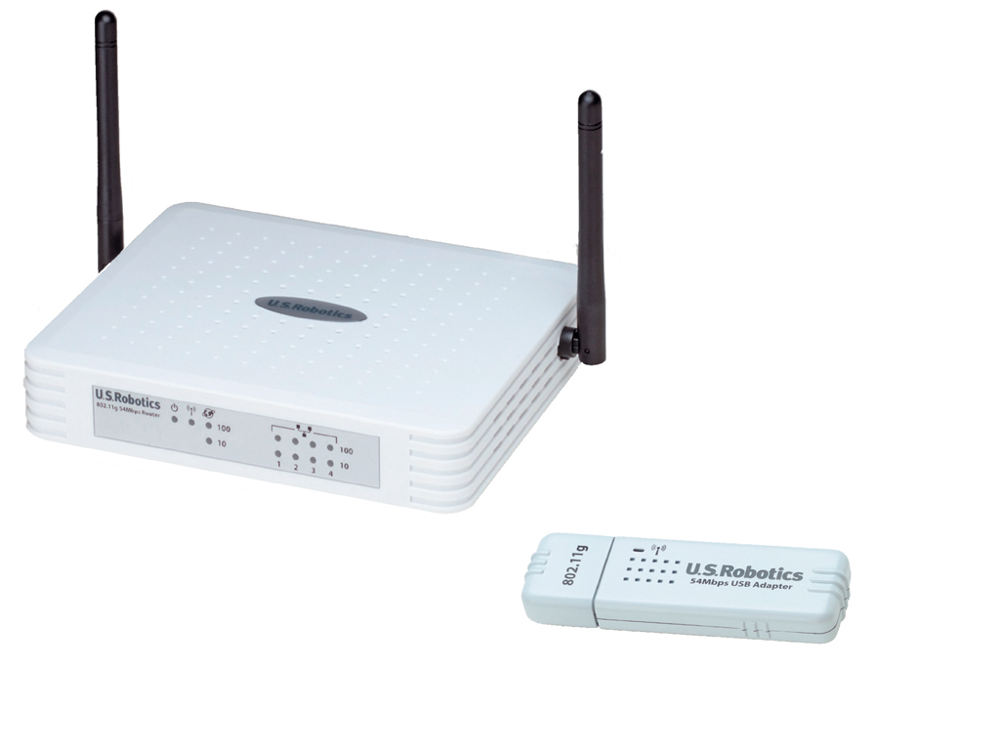
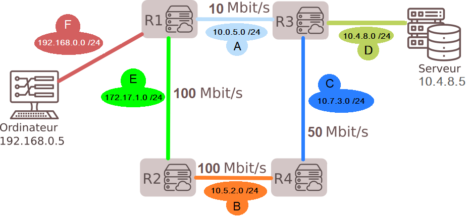
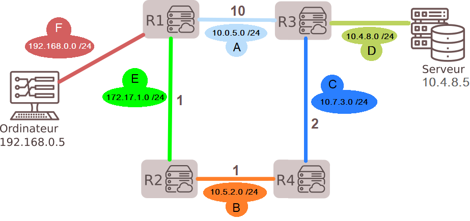
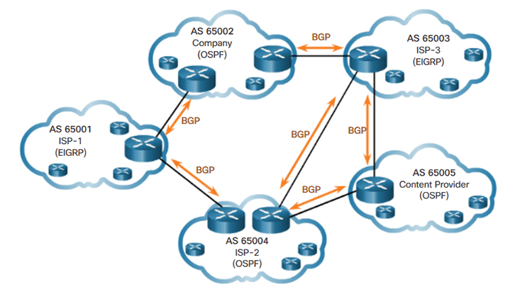

Topologie d'un réseau¶
L'interconnexion des routeurs forme ce que l'on appelle la topologie d'un réseau.
Dans la suite, on considérera le réseau suivant (adapté du cours de Gilles Lassus, lien dans les références à la fin) :

Un réseau informatique permet de relier les différentes machines afin qu'elles puissent communiquer.
Un message échangé entre deux machines est découpée en paquets, et chacun de ces paquets transite indépendamment des autres sur le réseau de la machine émettrice à la machine destinataire qui reconstitue le message à partir des différents paquets.
Un réseau est en réalité un ensemble de sous-réseaux interconnectés par des machines particulières appelées routeurs. Les interconnexions peuvent être de natures diverses : Ethernet, Wi-Fi, fibre optique, câble téléphonique, liaison par satellite, etc.

Un routeur CISCO (Crédits : Cisco Systems, CC BY-SA 3.0, via Wikimedia Commons).

Un routeur Wi-Fi (Crédits : Vascer, licence FAL, via Wikimedia Commons).
Ce sont ces routeurs qui jouent un rôle essentiel dans la transmission des paquets sur Internet puisque ce sont eux qui déterminent la meilleure route que doit emprunter un paquet pour aller jusqu'à destination. Pour cela, chaque routeur dispose d'une table de routage qui peut être définie manuellement (par un administrateur, souvent pour des petits réseaux comme celui d'une entreprise, d'une école, etc.) ou dynamiquement grâce à des algorithmes de routage spécifiques. Nous étudierons dans ce chapitre deux protocoles de routage dynamique : RIP et OSPF.
L'interconnexion des routeurs forme ce que l'on appelle la topologie d'un réseau.
Dans la suite, on considérera le réseau suivant (adapté du cours de Gilles Lassus, lien dans les références à la fin) :
Dans ce réseau, il y a :
Chaque routeur possède au moins deux cartes réseaux qui lui permet de relier au moins deux sous-réseaux (sinon, il ne sert à rien). Ainsi, un routeur appartient à chacun des sous-réseaux qu'il relie et possède donc plusieurs adresses IP : une par sous-réseaux auquel il appartient.
Par exemple, le routeur R1 :
192.168.0.0/24 (F), 10.0.5.0/24 (A) et 172.17.1.0/24 (E) 192.168.0.1 (son adresse dans le sous-réseau F), 10.0.5.1 (son adresse dans le sous-réseau A) et 172.17.1.1 (son adresse dans le sous-réseau E).Par soucis de simplification, on a donné des noms (A, B, ...) à chaque sous-réseau mais il faut savoir qu'en réalité c'est l'adresse IP de chaque sous-réseau qui est utilisée. Par exemple, le sous-réseau A possède l'adresse IP 10.0.5.0 et le masque de ce sous-réseau est 24.
✍️ Faites l'activité d'introduction sur l'adressage IP, les réseaux et les masques.
Imaginons que l'ordinateur (client) d'adresse 192.168.0.5 veut interroger le serveur 10.4.8.5.
Comme l'adresse IP du serveur n'est pas dans le sous-réseau F, alors l'ordinateur transmet le message au routeur R1 de son réseau local. Ce dernier regarde alors dans sa table de routage pour déterminer vers quel routeur voisin il doit transmettre le message. Chaque routeur réceptionnant le message procède ensuite de la même manière jusqu'à atteindre le dernier routeur appartenant au réseau local de l'adresse recherchée.
La table de routage d'un routeur contient plusieurs colonnes :
Par exemple, la table de routage de R1 pourrait être :
| Destination (@IP ss-rés) | Passerelle (@IP routeur) | Interface | Métrique |
|---|---|---|---|
| 192.168.0.0 /24 (F) | wlan0 | ||
| 172.17.1.0 /24 (E) | fasteth0 | ||
| 10.0.5.0 /24 (A) | eth0 | ||
| 10.5.2.0 /24 (B) | 172.17.1.2 (R2) | fasteth0 | |
| 10.7.3.0 /24 (C) | 10.0.5.2 (R3) | eth0 | |
| 10.4.8.0 /24 (D) | 10.0.5.2 (R3) | eth0 |
L'interface wlan0 indique que le routeur R1 est connecté au réseau
192.168.0.0 /24via une interface sans fil (wlan pour Wireless Local Area Network). Les interfaces fasteth0 et eth0 indiquent que le routeur R1 est connecté respectivement à chacun des réseaux172.17.1.0 /24et10.0.5.0 /24par une carte FastEthernet (fasteth) et Ethernet (eth), celles de numéro 0.On a laissé la colonne Métrique vide car cela va dépendre du protocole utilisé, comme on le verra par la suite.
Les tables de routage peuvent être construites de manière statique ou de manière dynamique.
Dans le cas d'un routage statique, les tables sont définies manuellement par l'administrateur. C'est simple à mettre en oeuvre et le contrôle est facile ce qui amène de la sécurité. En revanche, ce n'est adapté qu'à de petits réseaux (routage interne) comme le réseau d'une (petite) entreprise ou d'une école car il faut mettre à jour (manuellement) les tables de routage à chaque nouvel équipement installé, à chaque panne ou équipement défectueux.
Dans le cas d'un routage dynamique, les routeurs diffusent et partagent des informations pour indiquer quels réseaux sont atteignables par eux. En fonction des informations reçues chaque routeur peut alors mettre à jour dynamiquement sa table de routage grâce à des algorithmes de routage spécifiques. Ce sont des algorithmes de meilleur chemin qui sont utilisés, et qui permettent de définir les différentes métriques.
Nous allons maintenant voir deux routages dynamiques très connus mis en oeuvre par les protocoles RIP et OSPF.
Le protocole RIP, pour Routing Information Protocol (ou "protocole d'information de routage" en français), a été conçu dès l'origine d'Internet pour fonctionner sur des réseaux de taille modérée.
Il utilise l'algorithme de Bellman-Ford qui prévoit que chaque routeur diffuse régulièrement (toutes les 30 secondes) à ses voisins les routes qu'il connaît, c'est-à-dire la liste des réseaux qu'il peut atteindre et la distance, en nombre de sauts, pour les atteindre.
Ainsi, chaque routeur du réseau reçoit périodiquement (30 sec.) les routes des routeurs voisins. Il les utilise pour effectuer les traitements suivants :
✍️ Faites l'exercice 1 sur le protocole RIP
Si un routeur n'a aucune nouvelle d'un voisin pendant 3 minutes (180 sec., c'est le premier timeout), il considère que ce voisin est en panne, toutes les routes passant par lui sont affectées dans la distance infinie (égale à 16, voir en-dessous) et l'information est diffusée à tous ses voisins qui diffuseront aussi l'information à leurs voisins, etc. Au bout d'un certain temps supplémentaire (deuxième timeout), si un routeur n'a pas de nouvelle d'un voisin à distance 16, la route est complètement supprimée de sa table.
L'émission périodique des tables permet ainsi de prendre en compte :
Si tout se passe bien sur le réseau, les tables de routages convergent rapidement. La convergence est plus lente si des pannes ont lieu ou si de nouveaux routeurs apparaissent.
Par exemple, la table de routage du routeur R1 du réseau précédent peut être la suivante (après convergence !) :
| Destination (@IP ss-rés) | Passerelle (@IP routeur) | Interface | Nombre de sauts (métrique) |
|---|---|---|---|
| 192.168.0.0 /24 (F) | wlan0 | 1 | |
| 172.17.1.0 /24 (E) | fasteth0 | 1 | |
| 10.0.5.0 /24 (A) | eth0 | 1 | |
| 10.5.2.0 /24 (B) | 172.17.1.2 (R2) | fasteth0 | 2 |
| 10.7.3.0 /24 (C) | 10.0.5.2 (R3) | eth0 | 2 |
| 10.4.8.0 /24 (D) | 10.0.5.2 (R3) | eth0 | 2 |
Ainsi, avec le protocole RIP, si l'ordinateur d'adresse 192.168.0.5 veut interroger le serveur 10.4.8.5, le chemin utilisé sera R1-R3, pour un coût égal à 2 (qui est meilleur que le chemin R1-R2-R4-R3 de coût égal à 4).
Remarques et inconvénients
👉 Inconvénient : le protocole RIP ne tient alors pas compte de la qualité des liaisons entre les routeurs : pourtant, il se peut très bien qu'une route plus longue (qui traverse davantage de routeurs) soit en réalité plus rapide
👉 Inconvénient : cela limite l'utilisation du protocole RIP à des réseaux de petite taille
👉 Inconvénient : Un routeur n'a pas de vision au-delà de ses propres voisins et n'a donc jamais connaissance de la topologie du réseau tout entier.
Les inconvénients évoqués ci-dessus (et ce ne sont pas les seuls), et en particulier la non-prise en compte de la bande passante reliant les routeurs (donc la qualité des liaisons) font que d'autres protocoles ont vu le jour. En particulier, le protocole OSPF a vu le jour dans l'idée de remplacer le protocole RIP.
✍️ Faites les exercices 2 et 3 sur le protocole RIP
Le protocole OSPF, pour Open Shortest Path First, a été dévéloppé à partir de 1997 avec l'objectif de remplacer le protocole RIP dont on vient de citer quelques inconvénients.
Dans le protocole OSPF, et cela constitue deux différences fondamentales avec RIP, chaque routeur :
En particulier, le tables de routages du protocole OSPF sont identiques pour tous les routeurs.
Le protocole OSPF se décompose en deux phases importantes :
Plus précisément, chaque routeur :
Voici un tableau regroupant les différents types de liaison ainsi que leurs débits théoriques :
| Technologie | BP descendante | BP montante |
|---|---|---|
| Modem | 56 kbit/s | 48 kbit/s |
| Bluetooth | 3 Mbit/s | 3 Mbit/s |
| Ethernet | 10 Mbit/s | 10 Mbit/s |
| Wi-Fi | 10 Mbit/s ~ 10 Gbits/s | 10 Mbit/s ~ 10 Gbits/s |
| ADSL | 13 Mbit/s | 1 Mbit/s |
| 4G | 100 Mbit/s | 50 Mbit/s |
| Satellite | 50 Mbit/s | 1 Mbit/s |
| Fast Ethernet | 100 Mbit/s | 100 Mbit/s |
| FFTH (fibre) | 10 Gbit/s | 10 Gbit/s |
| 5G | 20 Gbit/s | 10 Gbit/s |
Le protocole OSPF associe un coût à chaque type de liaison. Ce coût est inversement proportionnel au débit de transfert et s'obtient généralement par la formule :
$$\text{coût} = \dfrac{10^8}{\text{débit}}$$où $\text{débit}$ est exprimé en bit/s.
Ainsi, plus le débit d'une liaison est important, plus le coût associé est faible. Les liaisons les plus rapides sont donc celles qui auront le coût le plus faible et donc celles privilégiées dans la recherche du meilleur chemin.
Cette formule peut varier suivant les exercices, celle à utiliser sera indiquée dans l'énoncé (c'est le numérateur qui peut varier).
Avec cette formule :
On simplifie sa représentation en dessinant uniquement les réseaux ainsi que les routeurs et les débits entre eux.

On peut alors calculer le coût de chaque liaison pour obtenir le graphe pondéré suivant :

En pratique, avec OSPF les routeurs communiquent entre eux pour déterminer la topologie complète du réseau :
Dans le cas du réseau précédent, lorsque les échanges sont terminés, la topologie du réseau vue par R1 (ou tout autre routeur de la zone) est la suivante :
| Lien | Sous-réseau | Coût |
|---|---|---|
| R1-R2 | 172.17.1.0 /24 | 1 |
| R1-R3 | 10.0.5.0 /24 | 10 |
| R2-R4 | 10.5.2.0 /24 | 1 |
| R3-R4 | 10.7.3.0 /24 | 2 |
La topologie du réseau étant connue, on peut passer à la dernière phase du protocole OSPF : chaque routeur applique un algorithme pour déterminer les plus courts chemins vers chaque sous-réseau et construit sa table de routage avec les meilleures routes.
| Destination (@IP ss-rés) | Passerelle (@IP routeur) | Interface | Coût (métrique) |
|---|---|---|---|
| 192.168.0.0 /24 (F) | wlan0 | 0 | |
| 172.17.1.0 /24 (E) | fasteth0 | 1 | |
| 10.0.5.0 /24 (A) | eth0 | 10 | |
| 10.5.2.0 /24 (B) | 172.17.1.2 (R2) | fasteth0 | 2 |
| 10.7.3.0 /24 (C) | 172.17.1.2 (R2) | fasteth0 | 4 |
| 10.4.8.0 /24 (D) | 172.17.1.2 (R2) | fasteth0 | 2 |
Dans notre exemple, on se rend compte que pour aller de l'ordinateur au serveur, le chemin le plus rapide n'est plus R1-R3 (avec le protocole RIP), mais R1-R2-R4-R3 avec un coût de 4 (contre 10 pour R1-R3).
Remarque : Dans l'exemple précédent les coûts d'accès aux différents réseaux n'ont pas été indiqués. Ils sont généralement communs aux différentes routes potentielles et n'entrent pas en compte pour calculer les meilleures routes. Par contre, si un réseau est accessible via deux routeurs avec des débits différents, il faudrait en tenir compte.
✍️ Faites l'exercice 4 sur le protocole OSPF.
Ici, le réseau est petit pour l'exemple, et un humain peut rapidement déterminer le chemin le plus court en un coup d'oeil. En réalité, c'est un algorithme qui calcule le chemin le plus court dans le graphe pondéré obtenu, qui peut être bien plus complexe.
Le protocole OSPF est basé sur l'algorithme de Dijkstra pour trouver le chemin le plus court (= le plus rapide !). C'est un algorithme découvert en 1959 par le mathématicien et informaticien néerlandais Edsger Dijkstra.
Cet algorithme n'est a priori pas au programme de Terminale NSI, mais son principe est très simple à comprendre et à appliquer. Voici une vidéo présentant son fonctionnement :
✍️ Faites l'exercice 5 sur l'algorithme de Dijkstra et les exercices bilan 6, 7 et 8.
Le monde IP est divisé en domaines administratifs (ou Admnistrative System en anglais) qui sont des zones dans lesquelles n'exerce qu'une seule autorité (ex: FAI ou ISP en anglais, pour Internet Service Provider) ayant différentes tâches comme l'administration des adresses, la facturation des coûts, la sécurisation et l'organisation des domaines de routage.
Chaque domaine administratif est lui-même divisé en différents Systèmes Autonomes (ou Autonomous System en anglais, souvent abrégé AS). Un Système Autonome est :
Les AS sont reliés entre eux par des routeurs externes chargés de transférer les informations de routage entre les différents AS (ces routeurs externes utilisent d'autres protocoles comme BGP pour Border Gateway Protocol, mais ce n'est pas le seul).
Ce que nous avons raconté dans ce cours sur RIP et OSPF s'applique donc à des réseaux qui sont des AS.

Le routage mondial. Source : ciscopress.com
En 2019, il y avait plus de 91 000 AS contre 35 000 en 2010 et 5 000 en 1999. Pour plus d'informations, voir cet article Wikipédia : Autonomous System.
Références :
Germain BECKER, Lycée Mounier, ANGERS
Ressource éducative libre distribuée sous Licence Creative Commons Attribution - Pas d’Utilisation Commerciale - Partage dans les Mêmes Conditions 4.0 International